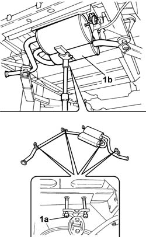
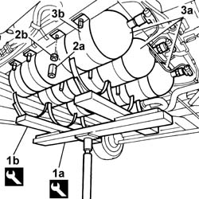
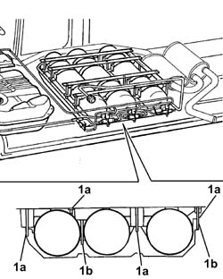

1042A16 CNG CYLINDER UNIT - R R
- Path
- Procedures > 10 ENGINE UNIT > 1042 METHANE GAS CANNISTER AND TUBES > 1042A METHANE GAS CANNISTER AND TUBES FOR RE-CHARGING > 1042A16 CNG CYLINDER UNIT - R R
- Kind
- repair procedure (removal / refitting; the operation number is the code)
- Applies to
- engines: 2.0 16V; all production periods
- Interactive page
- https://sloeber94.github.io/elrnDB-fDct/en/#/244000756
Applies to: engines: 2.0 16V; all production periods
 Removing
Removing
 Refitting
RefittingPosition the vehicle on the lift.
Op. 1042E60 CNG CYLINDER UNIT PROTECTION SEAL - R R
Proceed with draining the high pressure circuit following the instructions in the specific operation:
Op. 1042A02 METHANE SYSTEM SAFETY SET UP
Op. 1042A50 PIPE (1) CONNECTING CNG RECHARGING SYSTEM SOLENOIDS - R R
[All]
Position a hydraulic device underneath the exhaust pipe to support it.
1. Undo the bolts (1a) fixing the exhaust silencer (1b) and secure the exhaust pipe.
Remove the hydraulic support positioned previously.

Applies to: engines: 2.0 16V; all production periods
1. Fit the tool (1a) for supporting the canisters using the tool (1b) as illustrated in the diagram.
Description | Code | Function | |
|---|---|---|---|
1a | Support | 1.870.732.000 | CNG canister removal |
Description | Code | Function | |
|---|---|---|---|
1b | Support | 1.870.862.000 | CNG canister support tool fastening base |
Position the tools on a hydraulic lift and position it under the canisters.
2. Undo the spacers (2a) and the fixing nuts (2b).
3. Lower the hydraulic lift and remove the CNG canisters (3a) complete with mounting brackets (3b).
Remove the canisters from the support tool.

Applies to: engines: 2.0 16V; all production periods
Refitting
RemovingPosition the canisters on the support tool.
Raise the hydraulic support and place the canisters complete with mounting brackets in the special housing.
Tighten the canister mounting bracket fixing nuts.
1. Tighten the fixing nuts (1a) and (1b) to torque and then the spacers securing the CNG canister brackets to the bodyshell.
Value daNm | Fastening | Component | Ø | |
|---|---|---|---|---|
1a | 4 | Nut | CNG CYLINDER MOUNT | M12 |
Value daNm | Fastening | Component | Ø | |
|---|---|---|---|---|
1b | 8 | Nut | CNG CYLINDER MOUNT | M12 |

Applies to: engines: 2.0 16V; all production periods
Remove the support tools from underneath the canisters.
Description | Code | Function | |
|---|---|---|---|
- | Support | 1.870.732.000 | CNG canister removal |
Description | Code | Function | |
|---|---|---|---|
- | Support | 1.870.862.000 | CNG canister support tool fastening base |
Raise the exhaust pipe and tighten the bolts fixing the brackets to the bodyshell to torque.
Value daNm | Fastening | Component | Ø | |
|---|---|---|---|---|
- | 2,6 | Bolts | EXHAUST PIPE MOUNTS/FASTENERS | M8 |
Op. 1042A50 PIPE (1) CONNECTING CNG RECHARGING SYSTEM SOLENOIDS - R R
[All]
Op. 1042E60 CNG CYLINDER UNIT PROTECTION SEAL - R R
Move the CNG cut-off solenoids to open position by hand and check system is efficient.
Remove the vehicle from the lift.
Topics linked from this page (3)
- 1042A02 METHANE SYSTEM SAFETY SET UP
- 1042A50 PIPE (1) CONNECTING CNG RECHARGING SYSTEM SOLENOIDS - R R
- 1042E60 CNG CYLINDER UNIT PROTECTION SEAL - R R